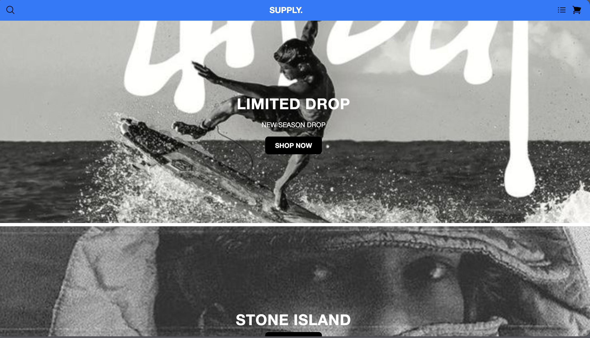
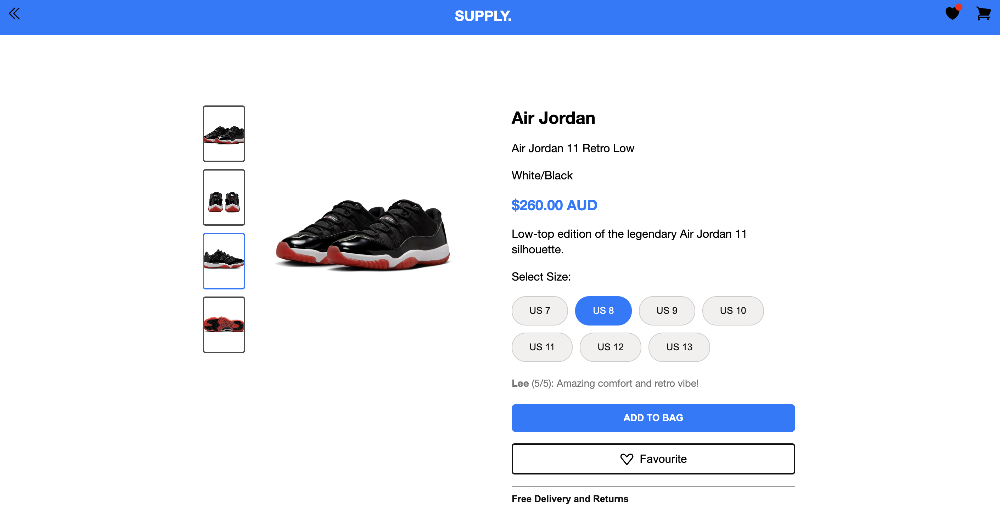
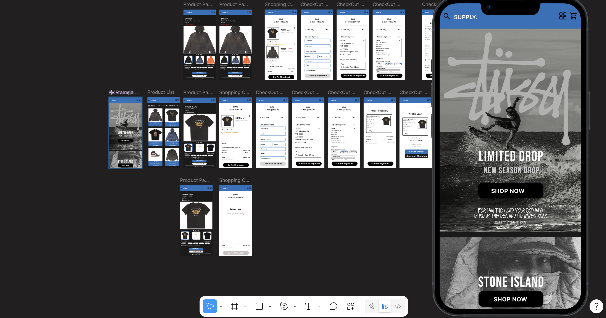

Map the shopping journey
I structured the key user flow from product browsing to cart, checkout, and final confirmation, ensuring each step had a clear purpose.
E-commerce UX / Prototyping / Front-end
A redesigned online shopping experience focused on clearer product discovery, shopping cart interaction, checkout flow, and responsive front-end implementation.
This project redesigned an online shopping platform across product browsing, product detail, cart, checkout, and confirmation flows. The goal was to create a clearer shopping journey with stronger information hierarchy and more usable interactions.
I created a 28-page Figma prototype, designed reusable interface components, refined the information architecture, and implemented key interface interactions using HTML, CSS, and JavaScript.

The original shopping experience needed a clearer structure across product discovery and checkout. Users needed to move from browsing to purchasing with less friction, more predictable interaction feedback, and a stronger sense of where they were in the process.
The design challenge was not only to make the interface look more refined, but also to make the shopping flow easier to scan, understand, and complete.

I structured the key user flow from product browsing to cart, checkout, and final confirmation, ensuring each step had a clear purpose.
I reorganised page hierarchy and product information to support clearer discovery, comparison, and decision-making.
I created consistent interface elements such as product cards, navigation, buttons, cart items, forms, and summary panels.
I used HTML, CSS, and JavaScript to rebuild key interactions and better understand how design decisions translate into functional interface behaviour.

Improved navigation and product hierarchy helped users better understand where to browse, compare items, and continue through the shopping journey.
Reusable components improved visual consistency and made the interface easier to scan across multiple pages.
Cart, checkout, and confirmation pages were structured to reduce uncertainty during purchase-related actions.
Front-end implementation helped test how interaction feedback, responsive layout, and interface behaviour worked beyond the static prototype.
Reflection
Designing in Figma allowed me to explore layout, hierarchy, and user flow, while implementing parts of the experience with HTML, CSS, and JavaScript helped me consider feasibility, interaction feedback, and responsive behaviour. It strengthened my ability to design flows that are both visually clear and practical to build.